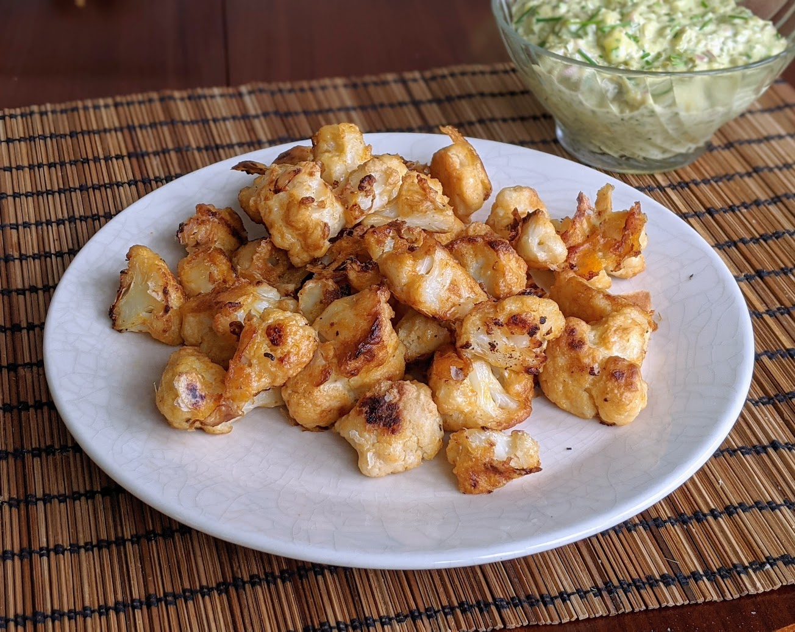

Chou-fleur buffalo

Pour deux personnes en plat principal, le double en entrée :
- Deux choux-fleurs pas trop gros, ou un bien gros
- 120g de farine
- 150g de bière blonde (pas trop forte) ou d'eau
- Deux belles gousses d'ail
- Une cuillère à soupe rase de paprika
- (Facultatif) Une demi-cuillère à café de levure chimique
- 30g de beurre
- 30mL de Tabasco
- Un demi-citron
- Sel, poivre
- Éplucher et écraser l'ail, le mélanger dans un gros saladier avec la farine, la bière, le paprika, la levure chimique, un peu de sel, et pas mal de poivre. Il faut que le tout soit uniforme et très crémeux, pas trop fluide.
- Faire préchauffer le four à 230°C. Laver l'extérieur des chou-fleurs, les couper en morceaux pas trop gros (3-4cm de diamètre) en enlevant les bouts trop durs au centre, et les mélanger dans le saladier pour qu'ils soient bien enveloppés de pâte.
- Disposer les morceaux de chou-fleur sur deux plaques de four recouvertes de papier sulfurisés, en faisant attention que les morceaux ne se touchent pas, et que la pâte ne s'étale pas sur la plaque. Les enfourner 20-25 minutes en les retournant à mi-cuisson.
- Pendant ce temps, faire fondre le beurre et le mélanger avec le Tabasco et le jus du citron. Bien mélanger.
- Sortir les morceaux de chou-fleur du four, et les badigeonner avec un pinceau de tous les côtés avec la sauce piquante.
- Les remettre au four un quart d'heure environ, en diminuant la température à 200°C.
- Sortir du four lorsque ça a bien bruni. Servir chaud, idéalement avec de la sauce tartare.
Retour à la liste des recettes